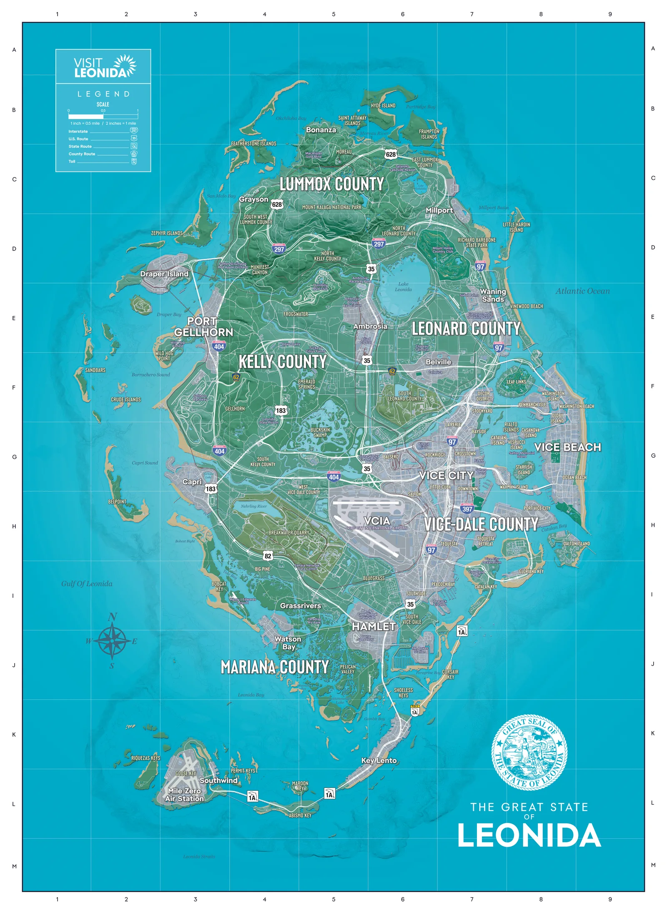

O mapa usa o traçado exato do mapa oficial de Leonida que a Rockstar liberou no lançamento — litoral, estradas, ruas, ferrovias e relevo —, com as cores e os nomes nos três idiomas do VICEVERSA. Os nomes de condados, bairros, ilhas e lugares são os oficiais. A grade (linhas A–M, colunas 1–9) é a mesma do pôster, e cada quadrado tem 1 milha. Os pontos e descrições em destaque são do VICEVERSA.
O mapa “Visit Leonida” que a Rockstar Games liberou no lançamento, em 19 de novembro, é a base do nosso mapa interativo. Ligue a camada do pôster no mapa para ver a arte original alinhada com os ícones, a busca e a grade.

Escolha um local para ver onde fica, a inspiração na vida real e o que tem por perto.
Leia o nosso guia de Leonida, região por região →
Pela primeira vez a série tem uma dupla romântica de protagonistas: Jason Duval e Lucia Caminos. Lucia é a primeira protagonista mulher de um GTA da era 3D — e o jogo começa com ela saindo da prisão.
O estado fictício de Leonida é inspirado na Flórida atual: pântanos, praias, motéis de neon e, claro, Vice City — a Miami da série, que não aparecia na cronologia principal há quase duas décadas.
A última visita canônica a Vice City foi em GTA: Vice City Stories (2006). A pré-venda até aproveita a nostalgia: o Pacote Vintage traz itens clássicos do Vice City de 2002.
A espera virou unidade de tempo. O meme "aconteceu antes de GTA 6" passou a marcar qualquer evento improvável do mundo real — de eleições a eclipses — que chegasse antes do jogo.
Grandes publishers seguraram anúncios e remarcaram lançamentos para fugir da concorrência — um jornalista chamou o fenômeno de "xadrez 4D" disputado por toda a indústria de games.
O primeiro trailer bateu recordes de audiência em 2023 e só perdeu a coroa em 2026 — para o trailer de um filme do Homem-Aranha, que passou de 500 milhões de views em 12 horas.